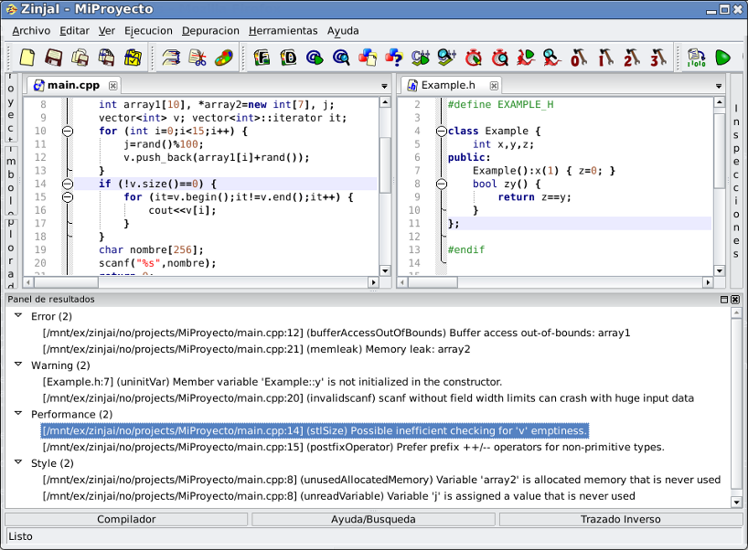

Análisis Estático
El analisis estático en ZinjaI permite detectar varios errores. Este tipo de análisis se basa en inspeccionar el código fuente de un proyecto, sin necesidad de ejecutarlo ni compilarlo. ZinjaI en realidad no realiza este análisis, sino que delega la tarea a CppCheck, y luego muestra sus resultados en un panel especial organizados en categorías. Para instalar CppCheck puede utilizar el gestor de paquetes de su distribución (si utiliza GNU/Linux), o descargarlo desde cppcheck.sourceforge.net. Esta herramienta permite detectar una gran variedad de errores, y genera además advertencias sobre construcciones que no son necesariamente erróneas, pero que podrían clarificarse (similares a los warnings de la compilación).
Para realizar el analisis estático de un programa, debe ejecutarlo utilizando el comando Iniciar... del submenú Análisis Estático del menú Herramientas. Se abrirá una nueva ventana en donde prodrá ir viendo la salida de CppCheck mientras este se ejecuta. Cuando el análisis se complete, esta ventana se cerrará y se acoplará en la ventana principal de ZinjaI un nuevo panel que presentará los resultados organizados en categorías. Si cierra este panel, para visualizarlo nuevamente sin ejecutar otra vez el análisis utilice la opción Mostrar Panel de Resultados del submenú Análisis Estáticos del menú Herramientas.

Puede configurar el tipo de análisis y omitir selectivamente algunos errores o fuentes completos utilizando el cuadro de Configuración del Análisis Estático.